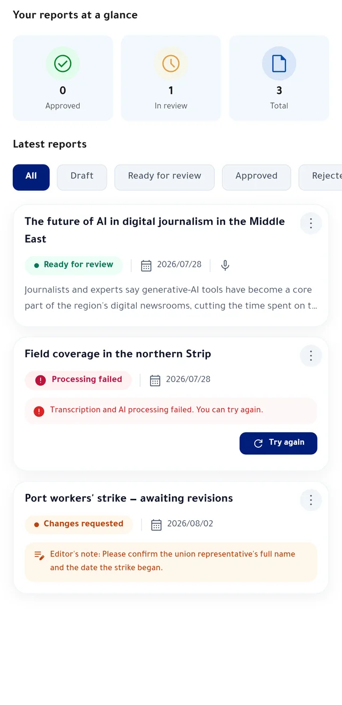
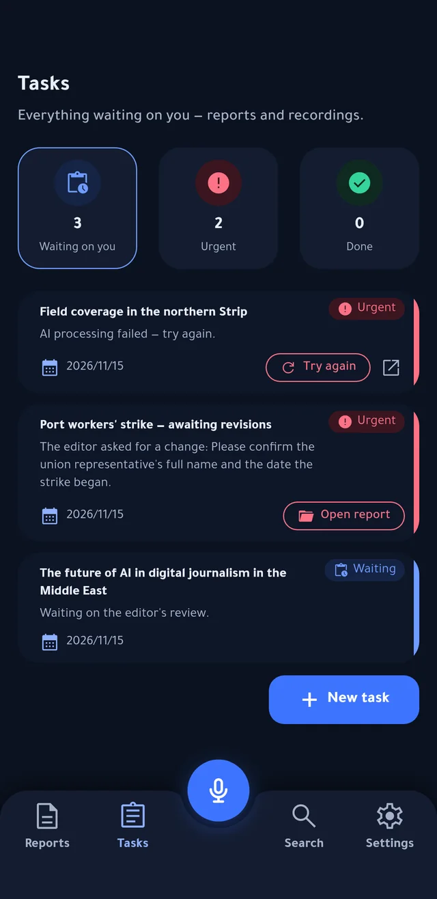

Team leader
Nashrati
I lead the team behind Nashrati, an AI newsroom platform with a Laravel API, a React dashboard, Python AI services and a Flutter app — and I built the mobile app myself.
01About
I'm a Computer Engineering student focused on Intelligent Systems at Al-Aqsa University, based in Gaza, Palestine — and I'm building my way into tech.
My work spans AI, Data Analytics, and Machine Learning. What I enjoy most is turning ideas into real products: AI-powered web apps and tools that actually solve problems. Every project teaches me something new, and that's the part I never get tired of.
My story isn't a straight line. I kept building, studying, and shipping through extremely difficult circumstances — power cuts, unstable internet, and everything that comes with living through a crisis. Those constraints didn't stop the work; they shaped how I work: resourceful, self-taught, and relentless about finishing what I start.
I'm still learning, and I plan to keep going. When things get hard, you adapt; you don't quit. Skills can be taught, but consistency is what carries you through.
Team leader
I lead the team behind Nashrati, an AI newsroom platform with a Laravel API, a React dashboard, Python AI services and a Flutter app — and I built the mobile app myself.
Freelance
I run a small freelance service using generative-AI image tools to produce interior-design visualizations for real clients — wedding halls and cafés — turning rough ideas into photorealistic concepts they can act on.
Volunteer
During a crisis period I volunteered to organize and structure community data, helping local efforts track needs and resources when it mattered most.
Training
A 144-hour program in software architecture, code organization and development workflow, completed in November 2026.
02Work
Lead project · Team leader · Mobile & AI
AI-assisted news drafting for field reporters. Record an interview where the story is happening; Nashrati transcribes it, pulls out the people, places and dates, and hands back a structured draft for a journalist or an editor to review before anything is published.
Nashrati is a team platform in four parts — a Laravel API, a React dashboard, Python AI services and a Flutter mobile app. I led the team as its team leader, and built the mobile app myself: its architecture, offline sync, audio capture, and its Arabic and English interface.






Featured · Machine Learning
End-to-end machine-learning pipeline: exploratory data analysis, model comparison, and feature-importance interpretation.
What it proves A complete path from raw customer data to compared models and explainable business signals.
Featured · Web Product
Humanitarian-aid website built as a complete web-development course project with vanilla HTML, CSS, and JavaScript.
What it proves A real, deployed interface shaped around a meaningful community use case.
Featured · Research
Analytical study: when feature scaling changes the optimal classifier in pattern recognition.
What it proves A focused research question translated into technical analysis and reproducible reasoning.
A growing collection of machine-learning work: Python, data science, deep learning, and data-analysis experiments and notes.
Java application modeling an IT company: OOP design, class relationships, collections (ArrayList), and file handling.
Complete campus network in Cisco Packet Tracer: DHCP, RADIUS authentication, and WPA2-Enterprise wireless security.
Library management system built in Java with a clean object-oriented structure for books, members, and loans.
Control-system designs for classic automation scenarios: a traffic-signal controller and a water-pump controller.
No projects in this category yet.
03Lab
The question behind my pattern-recognition research, as something you can play with. A k-nearest-neighbours classifier decides whether a bank customer stays or leaves by asking the customers most like them. But “most like” depends on units: measured raw, a balance in the tens of thousands drowns out an age in the tens.
Synthetic toy data, classified live in your browser by a few hundred lines of dependency-free JavaScript. Accuracy is leave-one-out: each customer is predicted from all the others. The chart you are looking at is already scaled to fit the screen — the algorithm isn't, until you tell it to be.
04Skills
EDA, preprocessing, classifier comparison, interpretation, and research-driven evaluation.
Shown in churn prediction and pattern-recognition work ↑LangChain foundations, Claude API workflows, agent skills, subagents, and responsible AI practice.
Backed by verified credentials ↓Led the Nashrati team and built its Flutter app on Clean Architecture: offline-first sync, audio capture, Arabic and English, and 1,500+ automated tests.
Shown in Nashrati ↑Responsive, accessible interfaces built with semantic HTML, modern CSS, and vanilla JavaScript.
Shown in Gaza Aid and this portfolio ↑05Certificates
32 credentials from Google, IBM, Anthropic, LangChain and TAQAT. Open any one to see the certificate itself; every row links to the issuer's own verification page.
06Contact
Available for remote internships, junior AI and data roles, selected freelance work, and thoughtful collaborations. Send a message here and I'll reply by email.
My local time